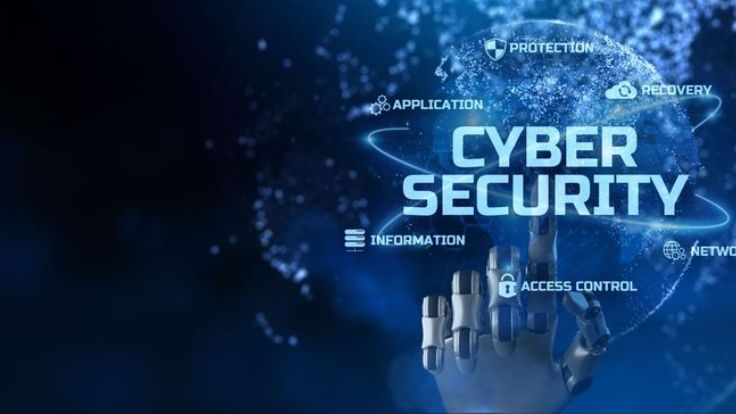

Cyber Security

Apa itu Cyber Security?
Cyber Security atau keamanan siber adalah praktik melindungi sistem komputer, jaringan, dan data dari serangan digital. Tujuannya adalah untuk mencegah akses ilegal, pencurian data, dan kerusakan pada perangkat atau informasi.
Jenis Ancaman Siber
1. Malware: Perangkat lunak berbahaya seperti virus dan ransomware.
2. Phishing: Penipuan untuk mencuri data pribadi melalui email atau situs palsu.
3. Hacking: Upaya masuk ke sistem tanpa izin.
4. DDoS: Serangan yang membuat website tidak bisa diakses.
Tips Melindungi Diri di Dunia Digital
1. Gunakan kata sandi yang kuat: Kombinasi huruf, angka, dan simbol.
2. Aktifkan two-factor authentication (2FA): Lapisan keamanan tambahan.
3. Hati-hati dengan email mencurigakan: Jangan klik link atau lampiran dari sumber tidak dikenal.
4. Update perangkat lunak: Patch keamanan terbaru melindungi dari celah keamanan.
Karir di Cyber Security
Keamanan siber adalah bidang yang sangat dibutuhkan. Pekerjaan seperti Security Analyst, Ethical Hacker, dan Security Engineer menawarkan gaji tinggi dan prospek karir yang cerah.
← Kembali ke Informasi